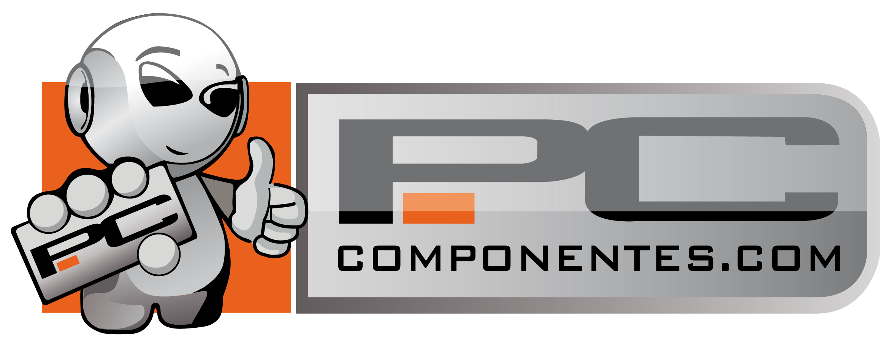

PC component Salvador
Taller y Ventas de Componentes de PC

En 2005 nace PcComponentes, dentro del grupo YF Networks, y, desde el primer momento, apostamos por el canal online como nuestro principal foco de negocio. Algo que en aquellos años era todavía difícil de asimilar, pronto se convirtió en nuestra principal seña de identidad.
El espíritu por el que se crea PcComponentes es para poder ofrecer a todos los amantes de la tecnología los mejores componentes a precios asequibles, sin renunciar a la calidad ni a un buen servicio postventa.
Mantener el carácter del pequeño comercio, la cercanía con el cliente, el trato personalizado son las premisas sobre las que gira nuestra filosofía. Estas máximas nos auparon hasta convertirnos en un referente web de venta online de productos informáticos en España.
Llegados a este punto, sólo podemos agradecer la confianza depositada en nosotros y el esfuerzo de toda la gente que ha pasado por aquí para hacer que PcComponentes fuera, sea y siga siendo, la tienda informática de referencia en España.